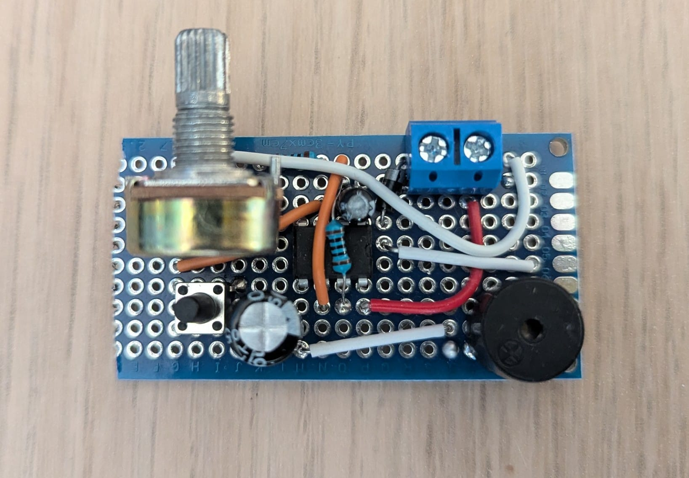
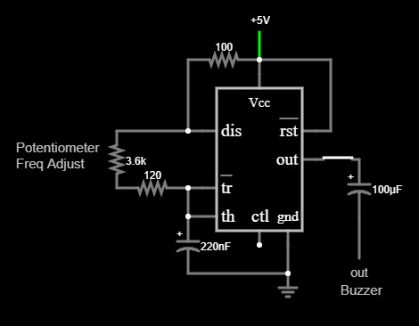

This project uses an NE555 timer chip configured in astable mode to create an audible sound with a variable frequency. By turning the potentiometer, you can sweep the output from a low-pitch square wave to a high-pitch square wave. The circuit is powered by 5V, controlled with a button, and its output is connected to a passive piezo speaker.
Low Frequency (min)
High Frequency (max)

This is the diagram for the NE555 Oscillator circuit. At its core, the chip acts like a voltage-controlled seesaw, constantly monitoring the external capacitor (0.22µF) as it charges through the resistors. These include a 120-ohm resistor that limits the minimum resistance of the 10k potentiometer used for control, and it discharges through the 555's discharge pin. When the capacitor's voltage climbs to two-thirds of the 5V supply, the 555's internal comparators flip the output pin HIGH, and the discharge pin connects to ground to discharge the capacitor. As soon as the capacitor drains down to one-third, the chip flips the output LOW and disconnects the discharge pin from ground, allowing the capacitor to charge again and resetting the cycle. This creates an electrical square wave which passes through the button and then through a 100µF capacitor. The capacitor removes any DC component, leaving only the alternating signal. Finally, this signal goes to the piezo buzzer, which draws very little current because of its high impedance.